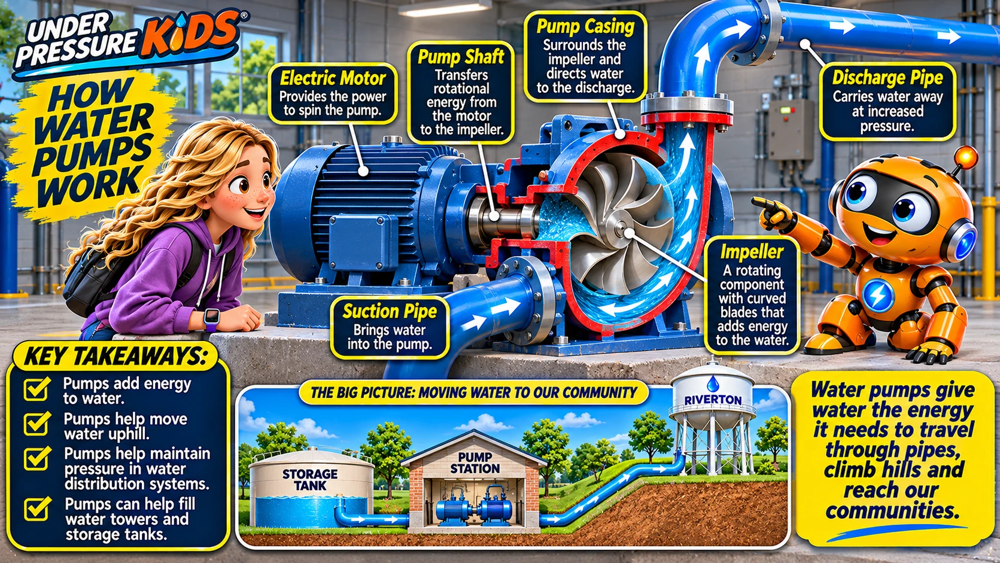

How Do Water Pumps Work?

Piper wondered how water could travel all the way to the top of Riverton's water tower.
“Doesn't water usually flow downhill?”
Bolt was excited to explain how pumps help move water!
Giving Water a Push
Water pumps use energy to move water from one place to another.
They can help move water uphill, through long pipes and into storage tanks.
Without pumps, getting water to many of our homes would be much more difficult.
What's Inside a Pump?
Many water pumps contain a spinning part called an impeller.
As the impeller spins, it transfers energy to the water, helping it move through the pipes.
An electric motor often provides the energy needed to spin the impeller.
Pumps Around Riverton
Water pumps help move drinking water through town, fill water towers and carry wastewater to treatment plants.
Some buildings even have their own pumps to help water reach the upper floors.
Big Pumps and Little Pumps
Pumps come in many different sizes.
Some are small enough to hold in your hand, while others are larger than a car!
Each pump is designed to do a particular job.
Did You Know?
Many water pumps operate automatically. Special controls tell them when to start and stop based on how much water the system needs.
Your Next Discovery
Have you ever used a squirt bottle?
When you squeeze the trigger, a tiny pump helps move the water inside.
Pumps are all around us, even in places you might not expect!
Keep exploring! There's an amazing world beneath your feet.